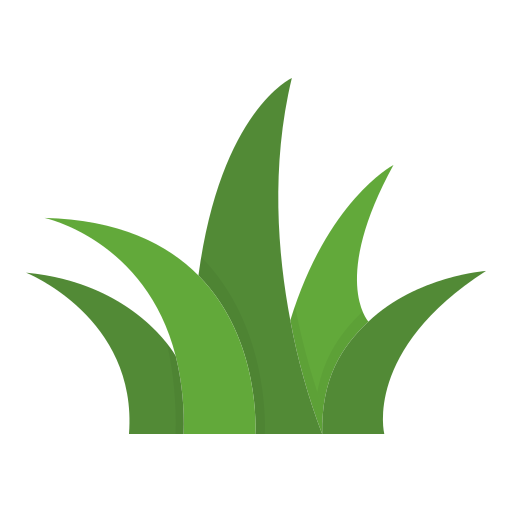
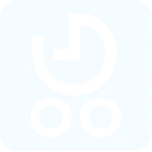
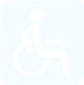
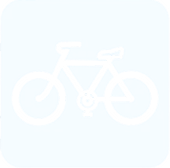

Bus door
Bus stop space
Incoming
21
5:59 pm
Columbus–dock
2
min

Detecting no. of riders …



PRIORITY RIDER
Please let the priority rider board first
♿
Enter blue zone to get ready for boarding
▶ Play walkthrough
Camera (simulated)
Priority rider detected
Nothing detected
Rider count (simulated)
2 riders detected
6 riders detected
Space bar plays/stops the walkthrough. Camera and rider-count picks hold through it.
checking SEPTA data…